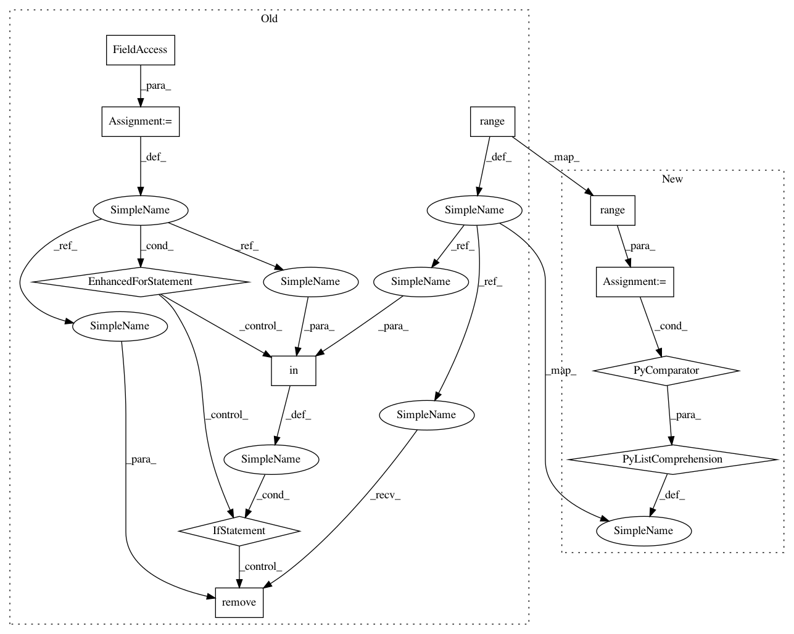

4e286a84a942acfcc227b845384833321b0ae256,acoular/tprocess.py,MaskedTimeInOut,_get_channels,#MaskedTimeInOut#,147
Before Change
def _get_channels( self ):
if len(self.invalid_channels)==0:
return slice(0, None, None)
allr = range(self.numchannels_total)
for channel in self.invalid_channels:
if channel in allr:
allr.remove(channel)
return array(allr)
@cached_property
def _get_numchannels( self ):
After Change
def _get_channels( self ):
if len(self.invalid_channels)==0:
return slice(0, None, None)
allr=[i for i in range(self.numchannels_total) if not (i in self.invalid_channels)]
return array(allr)
@cached_property
def _get_numchannels( self ):
In pattern: SUPERPATTERN
Frequency: 3
Non-data size: 11
Instances
Project Name: acoular/acoular
Commit Name: 4e286a84a942acfcc227b845384833321b0ae256
Time: 2018-01-24
Author: g.j.h@gmx.net
File Name: acoular/tprocess.py
Class Name: MaskedTimeInOut
Method Name: _get_channels
Project Name: acoular/acoular
Commit Name: 8665969f51679c3795063f142f135a29e3c9661f
Time: 2017-08-10
Author: adam.kujawski@campus.tu-berlin.de
File Name: acoular/microphones.py
Class Name: MicGeom
Method Name: _get_mpos
Project Name: acoular/acoular
Commit Name: 8665969f51679c3795063f142f135a29e3c9661f
Time: 2017-08-10
Author: adam.kujawski@campus.tu-berlin.de
File Name: acoular/sources.py
Class Name: MaskedTimeSamples
Method Name: _get_channels